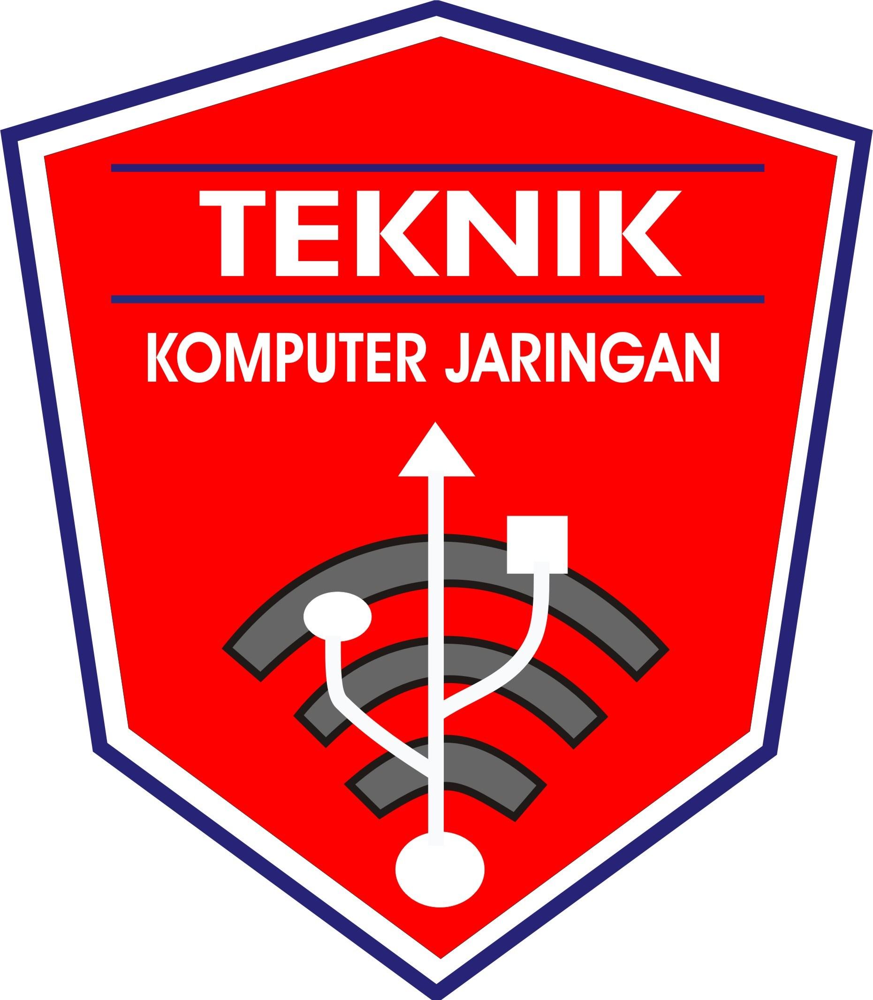

SMK YASBAM
Sekolah Menengah Kejuruan KOTA BOGOR

Tentang
SMK Yasbam adalah sekolah yang sangat peduli dengan pendidikan akademik dan juga nilai-nilai adab dan akhlak. Kami sangat berkomitmen untuk memberikan pendidikan yang menyeluruh dan mendalam tentang wawasan keislaman kepada seluruh siswa-siswi kami. Kami percaya bahwa lulusan SMK Yasbam tidak hanya pintar secara akademik, tetapi juga memiliki akhlak yang unggul, kuat dalam keimanannya, dan memiliki keinginan untuk berkontribusi secara aktif dalam masyarakat. Kami yakin bahwa dengan kombinasi pendidikan akademik yang kuat dan penanaman nilai-nilai keislaman yang mendalam, lulusan SMK Yasbam akan menjadi pemimpin masa depan yang berintegritas, memiliki keahlian yang tinggi, serta berperan penting dalam membangun masyarakat yang lebih baik. Dengan selalu berlandaskan pada sikap yang mandiri, religius serta memiliki akhlaqul yang karimah. Juga dengan sikap Birrul Walidain yang bisa memberikan dampak untuk kehidupan yang lebih baik.
Program Studi
Teknik Komputer Jaringan
sTKJ merupakan sebuah kejuruan yang mempelajari tentang cara merakit komputer, mengenal dan mempelajari komponen hardware apa saja yang ada di dalam komputer, merakit komputer serta fokus mempelajari jaringan dasar.
Teknik dan Bisnis Sepeda Motor
Teknik dan Bisnis Sepeda Motor (TBSM) adalah salah satu cabang ilmu teknik mesin yang mempelajari tentang bagaimana merancang, membuat dan mengembangkan alat-alat transportasi darat yang menggunakan mesin, terutama sepeda motor.
Otomatisasi Tata Kelola Perkantoran

Otomatisasi Tata Kelola Perkantoran (OTKP) merupakan salah satu Kompetensi Keahlian dari Bidang Keahlian Bisnis dan Manajemen. Jurusan OTKP akan membekali siswa dengan kemampuan pada bidang administrasi baik secara pengetahuan, keterampilan, dan sikap dalam menyelesaikan pekerjaan-pekerjaan perusahaan atau kantor. Secara teknis SMK Jurusan OTKP akan mempelajari segala jenis kegiatan kantor. Mulai dari pembukuan, pengarsipan, hingga public relations dengan memanfaatkan pengetahuan keterampilan teknologi informasi. Kompetensi keahlian ini akan menghasilkan tenaga-tenaga yang terampil, berkepribadian, profesional, berkarakter, berbudaya demi memenuhi kebutuhan tenaga administrasi untuk bersaing di era global.
Tenntang
H. Deden Iskandar S.Pd., M.Pd.
Kepala Smk Yasbam KOTA BOGOR.
Hj Lilis Sofia S.Pd
Waka Kurikulum SMK YASBAM.